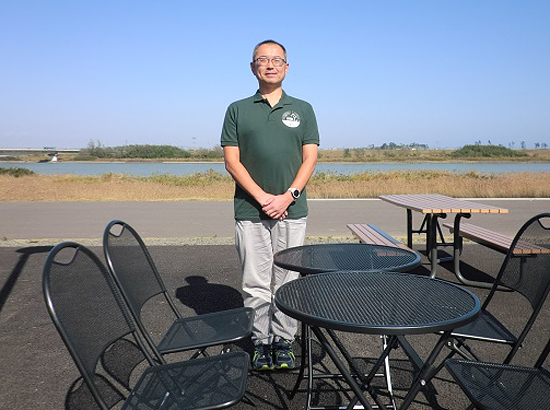
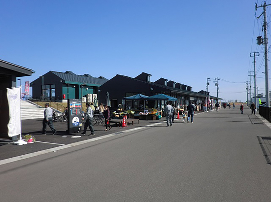

被災地のいま 宮城県・福島県の現状
「被災地のいま」 ～宮城県名取市～
第76回 2019年12月5日 ―まち・住まい・コミュニティ―
復活した閖上の魅力を発信していきたい
宮城県名取市／かわまちてらす閖上（ゆりあげ）
名取市内でも津波被害の大きかった閖上地区に、2019年4月、観光と交流の商業施設「かわまちてらす閖上」（以下、かわまちてらす）がオープンしました。名取川の堤防沿いにレストランやカフェ、海産物店などが建ち並び、食はもちろん散歩やツーリングなどアクティビティも楽しめる人気スポットとなっています。
また周辺では宅地開発が進み、地元の人たちの新たな交流拠点としても注目されています。
（株）かわまちてらす閖上の菊地祥弘さんは、「名取川堤防沿いのエリアは元々商店街があったところ。地元の人たちにとっては昔から身近な場所だった」と言います。
震災で大きく傷ついた閖上ですが、地元の商業者たちは「閖上にもう一度かつての賑わいを取り戻したい」と立ち上がり、名取川の景観を活かしてかわまちてらすをつくりました。
かわまちてらすをきっかけにまちづくりが前進すれば、定住者の増加につながるとの期待もあります。
「ここは閖上の復活の象徴。地域の期待の大きさをひしひしと感じている」と菊地さん。この夏、広場をステージにして開催したカラオケ大会には大勢の地元住民が参加し、その場で次の開催を待つ声があがるほど盛り上がったそうです。
オープンから約6ヶ月。かわまちてらすは平日にも関わらず、食事や買い物を楽しんだり、堤防沿いを散策したりする大勢の人で賑わっています。「土日の来客はさらに多い。芋煮やイルミネーション、お花見など様々なイベントを実施し、賑わいを継続していきたい」。
かわまちてらすはロケーションの良さでも人を惹きつけています。「この風景、素晴らしいでしょ」と菊地さんの指さす方を見れば、海と空に向かってゆったりと流れる名取川が目に入ります。風景を楽しみながら食事や買い物ができ、仙台の都心部からも近く気軽に足を運ぶことができます。
「震災を乗り越えて復活した閖上を見にきてほしい。そのためにこれからも閖上の魅力をかわまちてらすから発信していきたい」。
歩みは始まったばかり。閖上の賑わいがずっと続くよう、菊地さんたちは様々なもてなしのアイディアを繰り出しながら、お客さまを迎えています。
◎かわまちてらす閖上 https://kawamachi-terasu.jp/

▲（株）かわまちてらす閖上の菊地祥弘（よしひろ）さん。「来客数の増加をかわまちてらす各テナントの経営安定につなげていくことが今後の課題」と話します。

▲かわまちてらす閖上。閖上の海と松からイメージしたダークグリーンの建物に地元や市外・県外から出店した26のテナントが入っています。
2019年3月21日、みやぎ生協はコープふくしま・福島県南生協と組織合同しました。このコーナーのタイトルも「被災地のいま みやぎ生協・コープふくしまから宮城・福島のいまをお伝えします」に変え、福島県の現状についてもお伝えしていきます。
前の記事
第75回「被災地のいま ～宮城県亘理町～」（2019年11月05日）